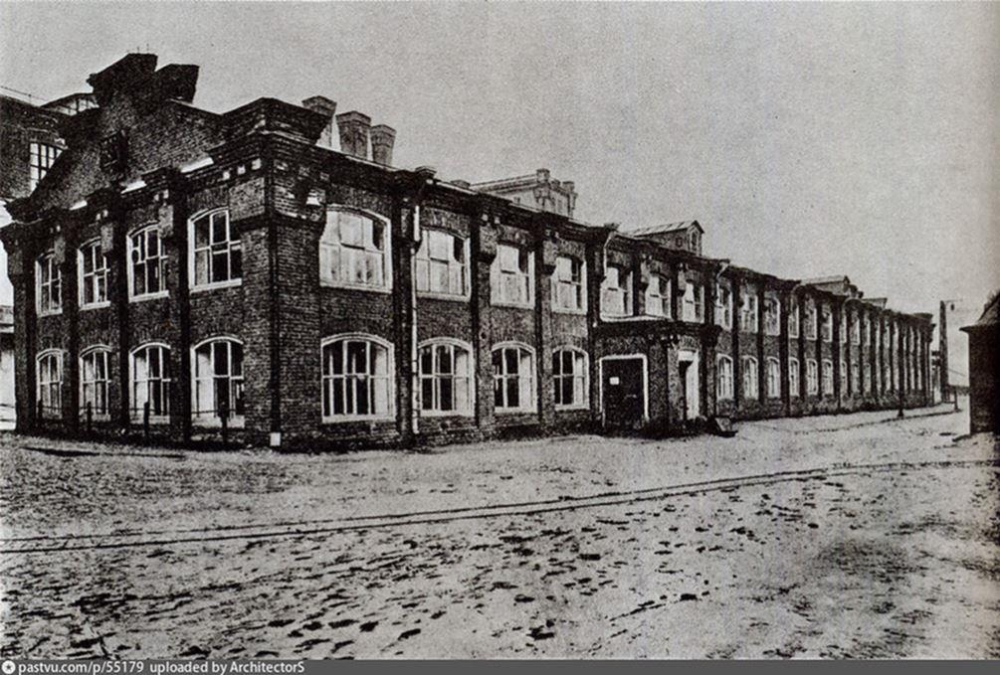
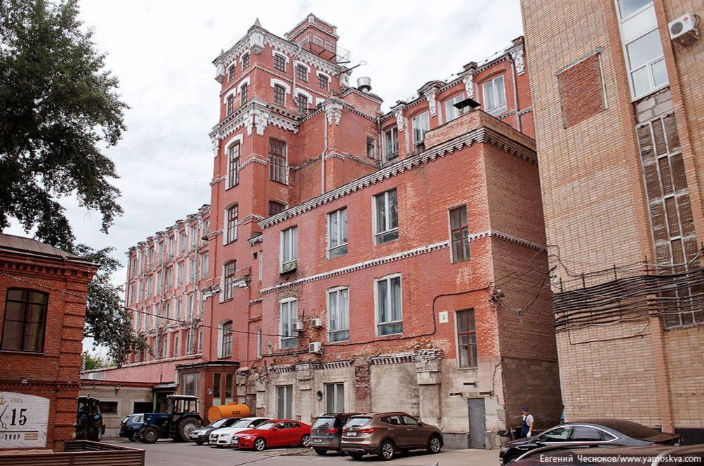

Nadiejda : 100 ans de nostalgies russes. Troisième épisode : Premiers pas à la manufacture Trechgornaya
par Valérie FELDER
DE LA PHOTO À LA VIDÉO
Depuis longtemps, la photographie nourrit mon univers artistique. Le regard que je pose sur le monde s’y déploie. Un jour, un renouvellement : le souhait de passer à la vidéo me saisit. Un ouvrage que je dévore m’ouvre des pistes. J’entrevois les potentiels neufs du plan-séquence. Ils nourrissent mon imaginaire au service de mes racines familiales maternelles.
Écrire le plan de mon film dans les grandes lignes m'a pris trois mois. Je n'étais pas satisfaite. J'avais de nombreuses prévisions de témoignages possibles pour me parler de la vie des immigrés russes en Belgique : la vie avant la révolution, l'exode, la vie des Russes en Belgique, les différentes associations d'entraide et de préservation culturelle russe... Mais personne pour me parler des Russes qui avaient vécu en Russie pendant toutes ces années. Je me rendais compte qu'il était important de commencer ce travail maintenant.
Marina Tolstoï, Présidente de La Fondation pour la préservation du patrimoine russe dans l'UE1
PLUS QU’UNE OUVERTURE SUR LA RUSSIE...
C'est en lisant une annonce pour un concert que J'ai pensé qu’interviewer le chanteur Vadim Piankov, que je ne connaissais pas du tout, pourrait être une solution. J'ai trouvé son adresse mail sur Internet, j'ai écouté quelques chansons en ligne et je lui ai écrit.
Cet artiste complet connaît aussi bien les Russes d'ici, avec leur double culture, que ceux de là-bas, avec une culture qui avait certainement évolué en se nourrissant d'autres réalités, d'autres richesses.
Il m'a répondu quelque temps plus tard : j'avais donc réussi à attirer son attention. Je suis heureuse du tour que prend la vie.
www.piankov.com
RENCONTRER, CAMÉRA À L’ÉPAULE
Après la période d'écriture, j'ai renoué avec des amitiés anciennes et je les ai renforcées. J'ai aussi rencontré de nouveaux amis. Vadim sera incontestablement de ceux-là. Toutes ces rencontres nourriront mon esprit et mon cœur : mon âme. Ce mot qui en Russe est toujours prononcé avec une infinie douceur et un éclat pétillant dans l’œil, comme un petit mot d'amour : « Doucha ».
L'âme slave de Vladimir Fedorovski : Panorama des artistes slaves du début du XXe siècle
UNE AMITIÉ NAÎT
J'ai rencontré Vadim six mois après lui avoir écrit. Les choses ont pris une bien belle tournure puisque, je me retrouvais chez lui et son épouse en Russie pour mon premier repérage. C'était au lendemain du Nouvel-An, le 2 janvier 2016. Ce que je ne savais pas encore, c’est que Natacha est une grande cinéaste russe et qu’elle me ferait l’honneur de participer à mon projet.
Interview du père Dimitri par Natalia Piankova (2018)
PREMIERS REPÉRAGES EN RUSSIE
LES PRÉPARATIFS
Je séjournerai dix jours en Russie. Je ne partais pas pour filmer, ni pour faire du tourisme mais pour m'imprégner des lieux et des gens. Une seule priorité : prendre mon temps, ne rien anticiper. J'étais comme envoûtée, libre d'avancer sans efforts dans l'entrebâillement d'une porte.
DIX JOURS CHEZ MES NOUVEAUX AMIS
Leur mode de vie était très semblable au mien, davantage qu'avec celui de bien des Belges. L'ambiance y était chaleureuse.
Les deux premiers jours, je restai à l’appartement avec Vadim, Natacha2 et Loubov, une amie qui se trouvait là. Loubov : ce prénom me ramène à mon arrière-grand-mère qui a quitté la Russie cent ans plus tôt, avec mon grand-père alors âgé de 7 ans et son frère Constantin (9 ans). Cela me ramène aussi à la manufacture familiale que je dois absolument trouver. Je ne peux repartir sans m’y rendre.
MOSCOU, À NOUS DEUX !
Le troisième jour, je décide de me rendre seule au centre de Moscou en train puisque Vadim et Natacha habitent la grande banlieue, à 30km de Moscou. Malgré l'insistance amicale de Loubov de m'accompagner, il était important pour moi d'y aller seule.
Dans le train, j'étais heureuse de regarder le paysage enneigé par la fenêtre. Puis d'enfin mettre les pieds dans ce si prestigieux Métro3. En Russie, c'est congé officiel entre la fête de Noël catholique et le Noël orthodoxe4. La ville est déserte. Alors que je sortais de la station Alexandrovsky Sad, j'étais foudroyée par une grande tristesse. Je n'étais même plus heureuse d'être là, je pleurais à chaudes larmes : je pensais à mon grand-père, à la vie qu'il avait quittée, tout gamin qu’il était. Je suis restée affectée par cette pensée toute la journée. Je visitais sans rien voir, ma tête était ailleurs.
BRANCHE MATERNELLE
Je suis la fille d'Anna Kyrilovna Barkowskaya5 (Anne Barkowski, Aniouta pour les intimes). Mon grand-père s'appelait donc Cyrille Barkowski (Kyrille en russe). Il est venu vivre en Belgique en 1934 faire ces études. Avant cela, il vivait en Tchécoslovaquie ( de 1920 à 1934).
Photo de mon grand-père étudiant à Louvain (à droite)6
VOYAGE EN RUSSIE DANS LES ANNÉES 70
Mon grand-père est retourné en voyage en Russie dans les années 70.
Il avait rapporté de son séjour, un circuit avec des petites voitures à remontoir.
Pour nous, mes cousins, mon frère et moi, cela ressemblait à une antiquité des années 50, mais c'était l'occasion pour lui de partager avec nous de son temps, de sa culture. Tout comme il jouait aux échecs7 avec nous, nous lisait des passages qu'il choisissait parmi les auteurs russes.
Je me souviens qu'il m’avait lu un passage relatant la grande famine en Russie en 1921/19228 : dans ce passage, une mère était contrainte de manger son enfant pour survivre. J'avais 9 ans et j'étais heureuse qu'il me trouve assez grande pour ne pas me lire des livres pour enfants ; cela me permettait de parler du passage lu avec lui. Il ne m'a jamais dit du mal de ceux qui vivaient en Union soviétique, contrairement à d'autres Russes (à l’époque nous étions les Russes et ceux de là-bas étaient les Soviétiques, la Russie n’existait pas). Certains voyaient en chacun d'entre eux la responsabilité de ce drame, oubliant que le drame était partagé par des souffrances qui se vivaient de part et d'autre de ce qui avait été la Russie, c'est ce que je retenais de cet enseignement. Mon grand-père ne me parlera jamais de tout ce que cette révolution a bouleversé dans sa vie. Il ne nommait pas des coupables, il racontait les faits tels qu'ils étaient présentés dans la littérature sans jamais parler de son propre vécu. Il me parlait de sa Russie en citant des poèmes, en chantant des chansons que je ne comprenais pas. Dans une interview, mon cousin Grégoire Barkowski dira à propos de la transmission culturelle : « On se sent parfois plus proche de nos grands-parents que de nos parents ». Je me sens en harmonie avec ce ressenti.
Mon grand-père est décédé alors que j'avais 16 ans et je pense encore souvent à lui.
LA MANUFACTURE
Dix jours, c'est court. Je m'en tiens à l'essentiel. Je vous raconterai pour finir ma visite à la manufacture. En fait, quand j'avais dit que je cherchais la manufacture, je n'avais pas bien donné le nom a Vadim et Natacha, nous avions du mal à trouver mais quand je leur ai dit que c'était la famille Prokhoroff :
- La famille Prokhoroff ! Tu veux dire la manufacture Trechgornaya9 ? Tu es certaine ?
- Oui, pourquoi ?
À Moscou tout le monde connaît l'histoire de cette manufacture qui fournissait du travail à des milliers d'employés et d'ouvriers avant la révolution. Elle a continué à exister après la révolution. Du coup, cela devenait beaucoup plus simple.

Un des bâtiments de la manufacture Trechgornaya (1890)
En arrivant devant les bâtiments qui existent encore mais sont aujourd'hui principalement occupés par des cafés branchés et des lofts loués à des entreprises de mode, j'ai trouvé que c'était impressionnant. Je ne m'y attendais pas. C'était grand à voir mais c'était aussi grand dans ce que j'éprouvais et si, lors de mon premier contact avec Moscou, j'avais ressenti une grande tristesse, là, au contraire, je ressentais une grande fierté.
Ne pouvant ramasser un peu de terre au sol à cause de la neige et de la terre gelée, je me contentai de prendre des petites branches d'un arbuste qui avait poussé là, grâce à la terre qui s'y trouvait. Une pour moi, une pour mon fils, une pour ma fille.

Manufacture Trechgornaya devenue un lieu branché (2018)
UNE CHANSON DE VADIM PIANKOV POUR CLÔTURER CET ÉPISODE.
NOCTURNE
Quelle heure est-il, mon âme,
Quelle heure est-il, ma joie ?
Est-ce l’heure d’une farce, d’un drame,
Ou bien, est-ce l’heure d’un choix ?
Quel âge as-tu, mon âme,
Ardente mais fatiguée
D'où vient ta force, ta flamme
Quand tu es éveillée ?
Dis-moi, existais-tu
Avant que je sois né
Comment t’appelais-tu ?
Qui as-tu délaissé?
As-tu pour eux toujours
De l’amour ou du chagrin?
A quand viendra mon tour
Aujourd'hui ou demain?
Dis-moi alors mon âme,
Quand je ne serai plus,
Que feras-tu ma… dame,
Qui épouseras-tu ?
Bonne nuit, bonne nuit, mon âme,
Muette comme toujours…
La mort est une lame
Qui nous sépare un jour.
Quelle heure est-il, mon âme,
Quelle heure est-il, ma joie?
Est-ce l’heure d’une farce, d’un drame,
Ou bien, est-ce l’heure d’un choix ?
V.F.
Notes :
1. L’association a été fondée en Belgique en 2001. Elle a pour objectif l’étude de l’émigration russe blanche par le rassemblement, l’analyse scientifique et la classification des archives de l’émigration russe dans le cadre de l’historiographie générale de la Russie.
2. Dans la culture russe, un même nom se dit avec des tas de surnoms. C'est une manière affectueuse de porter une attention à l'autre. Natalia est donc son nom officiel mais ses amis l’appellent Natacha, tout comme Natacha appelle Vadim, Vadik … On ne peut donc parler de diminutifs au sens de la langue française ...c'est un peu comme le suffixe -eke en néerlandais où Marie deviendrait Marieke pour marquer plus d'intimité. Une autre manière de vous témoigner de l'intérêt, c'est d'ajouter le patronyme, qui apporte un respect de votre filiation.
3. dont La première ligne a été inaugurée en 1935. (source Wikipedia).
4. L'église orthodoxe russe a conservé le calendrier julien. C'est la raison pour laquelle les orthodoxes célèbrent Noël le 7 Janvier.
5. Pour les femmes, le patronyme est formé du prénom du père auquel est ajouté le suffixe ovna (овна), ou evna (евна).
6. L'aide aux Russes du Cardinal Mercier :Dans les années 1920, le Cardinal Mercier offre des bourses pour permettre aux immigrés russes de poursuivre leurs études. De nombreux Russes sont venus étudier en Belgique.
7. Les échecs ont toujours eu une grande importance dans la culture russe. Le champion d'échecs Alexandre Alekhine était le cousin de mon grand-père. Pour en savoir plus : http://www.creachess.com/biographie/alexandre-alekhine.php
8. Guerre civile et famine en Russie / 1917-1923 / Sergueï Adamets / Institut d’études slaves / Paris / 2003: « La population des régions les plus frappées a consommé toutes les pauvres réserves qu’elle avait réussi à accumuler depuis la récolte déficitaire. Et maintenant, elle utilise toutes sortes de succédanés pour se ravitailler. De plus en plus fréquemment, on peut observer des cas de cannibalisme, d’exhumation de cadavres et d’étouffement des enfants par les parents pour se nourrir. On n’arrive pas à enterrer les cadavres enflés, et si, quelquefois, on réussit à le faire avec la garde, ils seront déterrés et mangés la nuit qui suit. »
« C’est maintenant et uniquement maintenant – dit Lenine en mars 1922 -, quand le cannibalisme et des milliers de corps en décomposition couvrent les routes dans la région affectée par la famine, que nous pouvons et nous devons conduire avec toute férocité et sans pitié les réquisitions de biens [de l’église]. C’est maintenant et uniquement maintenant, que la majorité écrasante de la paysannerie sera avec nous, ou au moins elle ne va pas soutenir de façon résolue une poignée du clergé noir et de la bourgeoisie réactionnaire urbaine. »
9. La manufacture de la famille Prokhoroff est une des plus anciennes manufactures de Russie, elle a été fondé en 1799. Les Prokhoroff ont été les premiers employeurs de Russie à instaurer les journées de 10h alors qu'en Europe les ouvriers travaillaient 12 à 14 heures par jour ...
Petit historique de la manufacture(ru): de nombreuses photos d'hier à aujourd'hui https://ilovemoscow.livejournal.com/928134.html?fbclid=IwAR1WmSODLOYvRG2kB5xsjQ4wZtw4YsRZHVQ1KeTOMfY1eoZ74BKjsrbPUMw
Témoignage vidéo de Vacilia Ivanovitch Prokoroff Василия Ивановича Прохорова (ru) https://www.youtube.com/watch?v=irxBb_9hINQ
Vidéo sur la famille Prokhorov (ru) : Сотворить благо. Прохоровы ; https://www.youtube.com/watch?v=RZ0915a9fIU
Partager cette page